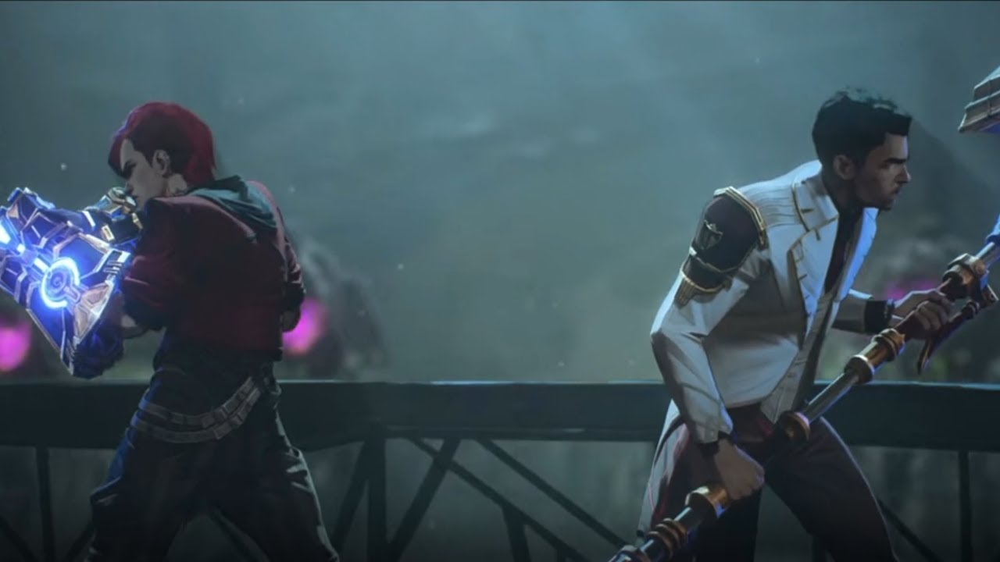

1. Episode: "Welcome to the Playground"
Sisters Powder and Vi are taken in by Vander, the leader of the failed rebellion, as his own children. Years later, Vi and Powder rob a Piltover penthouse with their adopted brothers, Mylo and Claggor. Powder steals a set of magical crystals and accidentally shatters one. This causes an explosion that destroys a large portion of the building. Returning to the undercity, the siblings encounter Deckard and his thugs; while they beat them in a fistfight, Powder is chased and loses the loot. Vander, now a community leader in Zaun, scolds the children for their carelessness and attempts to smooth things over with Grayson, the Sheriff of the enforcers, and her subordinate Marcus. Vi berates Mylo for calling Powder a "jinx" and reassures her sister that things will get better. In the lowest parts of the undercity, crime lord Silco extracts information from Deckard and tests a new mutagen known as Shimmer on a rat together with Singed, a Zaunite scientist
Written by: Christian Linke & Alex Yee
Directed by: Pascal Charrue & Arnaud Delord
IMDB rating: 8.5/10
2. Episode: "Some Mysteries Are Better Left Unsolved"
The crystals that Powder stole turn out to belong to Jayce Talis, a student at Piltover's academy. Piltover's ruling council has him testify about using illegal equipment in unsanctioned experiments. As a child, Jayce was saved by arcane magic and believes it can be a new resource for Piltover's evolution. The academy expels him when he admits the magical nature of the experiments, and his research is ordered to be destroyed. On the verge of suicide, his beliefs are renewed when Viktor, the disabled assistant of the academy's Professor Heimerdinger, offers to help him. In Zaun, Marcus pressures Vander to reveal the true culprits of the robbery, while the Zaunites pressure him to fight back against the interference of the enforcers. He chooses to keep his family safe and remain neutral, leaving some unsure of his leadership. Vi decides to turn herself in. Meanwhile, Silco manipulates Deckard into swallowing a vial of Shimmer.
Written by: Nick Luddington
Directed by: Pascal Charrue & Arnaud Delord
IMDB rating: 8.5/10
3. Episode: "The Base Violence Necessary for Change"
Vander stops Vi from turning herself in, offering himself to Grayson instead. However, Silco intervenes and captures Vander after a heavily mutated Deckard kills Grayson and her men, sparing only Marcus. Vi, Mylo, and Claggor go to rescue Vander, leaving Powder alone. In Piltover, Jayce and Viktor secretly work with the crystals under the discretion of councilor Mel Medarda and invent Hextech, a new arcane technology. It is revealed that Vander betrayed Silco in the past and tried to drown him. In the undercity, the siblings reach Vander but are cut off by Silco. Vi fights off Silco's thugs but is badly beaten by Deckard. In attempting to save her, Powder causes an explosion with the stolen crystals, killing Claggor and Mylo. Vander, wounded by Silco, takes Shimmer, kills Deckard, and saves Vi before dying. In her grief, Vi hits Powder, calls her a "jinx," and walks away. Seeing Silco approach Powder, Vi attempts to return to her but is ambushed and captured by Marcus. Believing Vi abandoned her, Powder breaks down in Silco's arms. He embraces Powder and tells her, "We'll show them all."
Written by: Ash Brannon
Directed by: Pascal Charrue & Arnaud Delord
IMDB rating: 9.6/10
4. Episode: "Happy Progress Day!"
Several years later, Piltover prospers with Jayce's Hextech technology and celebrates its 200th anniversary on a holiday called "Progress Day." Jayce initially hopes to reveal his and Viktor's latest gemstone device at the ceremony but decides not to after Heimerdinger warns him of its potential dangers. Elsewhere, Powder, now a teenager going by the name of Jinx, works for Silco, who she views as a surrogate father. She helps him smuggle materials, mainly Shimmer, into Piltover. A job goes awry when the Firelights, an undercity gang, interfere. While fighting, Jinx briefly mistakes a Firelight for Vi and has a violent breakdown. Caitlyn, an enforcer and Jayce's childhood friend, investigates what happened. Attempting to repair her damaged reputation with Silco, Jinx steals Jayce's gemstone and sets off an explosion that kills six enforcers. Jayce is given a Piltover council seat to protect their people from the stolen gemstone. Looking for information, Caitlyn travels to Stillwater prison and encounters an adult Vi, who has been imprisoned there by Marcus.
Written by: David Dunne
Directed by: Pascal Charrue & Arnaud Delord
IMDB rating: 8.7/10
5. Episode: "Everybody Wants to Be My Enemy"
Using forged paperwork, Caitlyn releases Vi from prison because of her knowledge of the undercity and works with her to find Silco. Vi tracks down Silco's second-in-command, Sevika, who reveals Jinx's relationship with Silco, a shock that allows Sevika to stab her. Meanwhile, it is revealed that Marcus was promoted to Sheriff with Silco's help. In exchange, Marcus allows Shimmer to be smuggled and blames the Progress Day bombing and robbery on the Firelights. Jinx refuses to work on the new Hextech gemstones because of the trauma of killing her family with a similar device. In response, Silco takes her to the river where Vander tried to drown him and tries to convince Powder to accept her new identity as Jinx via a baptism. Back in Piltover, Councilor Medarda starts a romantic relationship with Jayce while helping him navigate the complex political sphere he now finds himself in as a councilor. Meanwhile, Viktor's illness worsens, and he grows increasingly desperate to find a cure through Hextech technology.
Written by: Amanda Overton
Directed by: Pascal Charrue & Arnaud Delord
IMDB rating: 8.9/10
6. Episode: "When These Walls Come Tumbling Down"
After Viktor collapses in the lab from his illness, he and Jayce begin to study the "Hexcore," a new Hextech machine that reacts to organic matter and has the potential to cure it. Heimerdinger tries to have it destroyed due to its danger, prompting Jayce to orchestrate his removal from the council. Viktor approaches Singed, his childhood mentor, to help perfect the Hexcore. Silco, now aware of Vi's reappearance, orders Marcus to kill her and Caitlyn before they can resurface in Piltover. Marcus presents false proof that the Firelights were behind the attacks; Jayce orders a bridge blockade to protect Piltover. Jinx interrogates Sevika and learns of Vi's return. Vi and Caitlyn find a safehouse in the lowest slums of Zaun so Vi can recover from her fight with Sevika, but Silco finds them after bribing the local addicts with Shimmer. After escaping, the pair notice the blue smoke from a flare Vi gave Jinx before their ill-fated mission to rescue Vander years ago, and the sisters reunite. However, Caitlyn's presence triggers Jinx's mistrust. The Firelights intervene, steal the gemstone, and kidnap Caitlyn and Vi. Jinx, left behind, screams in despair.
Written by: Alex Yee
Directed by: Pascal Charrue & Arnaud Delord
IMDB rating: 9.2/10
7. Episode: "The Boy Saviour"
The Firelights leader is shown to be Vi and Powder's childhood friend Ekko, now a gruff and battle-hardened warrior. He explains that Silco took over the undercity after Vander's death and made the populace dependent on Shimmer; the Firelights have been leading efforts to thwart Silco and rehabilitate addicts. Ekko also warns Vi that Powder is gone and only Jinx remains, something Vi refuses to accept. Meanwhile, Singed provides Viktor with a variant of Shimmer to help him. Jayce's blockades increase unrest between the two cities. Viktor decides not to tell Jayce about using Shimmer to enable the Hexcore to modify his failing body after Jayce accidentally insults Viktor's undercity heritage. Caitlyn convinces Ekko to return the gemstone to Piltover, but Vi parts ways with them to find Jinx. Marcus stops Ekko and Caitlyn at the blockade, shoots Ekko, and prepares to kill Caitlyn. Seeing this, Vi runs back to help her. Envious of Caitlyn, Jinx detonates a swarm of robotic insects on the bridge, killing Marcus and his enforcers. Ekko and Jinx face off as Vi and injured Caitlyn flee to Piltover. Ekko bests her in a fight but hesitates to deliver the final blow, allowing Jinx to detonate a grenade near them.
Written by: Nick Luddington
Directed by: Pascal Charrue & Arnaud Delord
IMDB rating: 9.2/10
8. Episode: "Oil and Water"
Silco finds the heavily injured Jinx in the explosion's aftermath and sees that she managed to steal back the gemstone. He takes her to Singed to heal her wounds. As Jinx endures Singed's treatment, she hallucinates that it is Vi and Caitlyn inflicting the pain. He injects her with Shimmer, turning her eyes violet. Meanwhile, Mel's mother arrives in Piltover following the assassination of Mel's brother and attempts to prepare her for the brewing war with Zaun. While trying to help the locals of Zaun, Heimerdinger encounters Ekko, who injured his leg escaping from Jinx's grenade. Meanwhile, Viktor succeeds in healing his body through the Hexcore and is able to run for the first time. However, further experimentation results in the death of his childhood friend and assistant, Sky. After failing to convince the council to intervene against Silco, Vi abandons Caitlyn and partners with Jayce to take down Silco's Shimmer factories. Armed with Hextech weaponry, they defeat a group of Shimmer-enhanced soldiers, but Jayce accidentally kills a child worker. After returning home, Caitlyn is kidnapped by Jinx.
Written by: Ben St. John & Mollie St. John
Directed by: Pascal Charrue & Arnaud Delord
IMDB rating: 9.2/10
9. Episode: "The Monster You Created"
The child's death makes Jayce realize the potential cost of intra-city war. He brokers a peace treaty with Silco, offering Zaun's independence in exchange for Jinx. Ekko reveals his hideout to Heimerdinger. Feeling guilty over the death of Sky, Viktor makes Jayce promise to destroy the Hexcore. Meanwhile, Silco laments choosing between Zaun and Jinx, who overhears him. After beating Sevika in a fight, Vi is abducted by Jinx. She, Silco, and Caitlyn awaken restrained in the warehouse where Vander died. Jinx gives Vi a pistol, telling her to choose between Caitlyn and herself. Vi refuses and appeals to her childhood memories, causing Jinx to suffer a traumatic attack. Silco breaks free and shoots at Vi but misses, and Jinx guns him down. Silco reaffirms his paternal love for her before dying. Jinx, distraught, finally accepts her new identity and acknowledges that she and Vi have diverged. Jinx weaponizes the gemstone into a rocket launcher and fires at the Piltover council as they approve Jayce's proposal to grant Zaun independence.
Written by: Christian Linke & Alex Yee
Directed by: Pascal Charrue & Arnaud Delord
IMDB rating: 9.6/10
